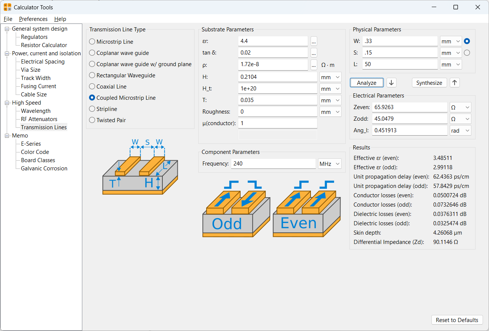

Corrections to the Finalized Schematics
I corrected the issues identified on 2026-07-13. I added the door-limit-switch connector and its debounce circuit to the Buttons sheet, connected the circuit to GPIO47 of the ESP32-S3, and fixed the I2C pull-up resistors.
PCB Layout and Routing
Board Setup
I began routing the PCB and configured the design-rule checker using the JLCPCB rules from the LabTroll KiCad Design Rules repository[1].
The rule set also references the KiCad custom-design-rule documentation[3], as well as examples by darkxst[4] and Dennis Kupec[5].
(version 1)
# Custom Design Rules (DRC) for KiCAD 7.0 (Stored in '<project>.kicad_dru' file).
#
# Matching JLCPCB capabilities: https://jlcpcb.com/capabilities/pcb-capabilities
#
# KiCad documentation: https://docs.kicad.org/master/id/pcbnew/pcbnew_advanced.html#custom_design_rules
#
# Inspiration
# - https://gist.github.com/darkxst/f713268e5469645425eed40115fb8b49 (with comments)
# - https://gist.github.com/denniskupec/e163d13b0a64c2044bd259f64659485e (with comments)
# TODO new rule: NPTH pads.
# Inner diameter of pad should be 0.4-0.5 mm larger than NPTH drill diameter.
# JLCPCB: "We make NPTH via dry sealing film process, if customer would like a NPTH but around with pad/copper,
# our engineer will dig out around pad/copper about 0.2mm-0.25mm, otherwise the metal potion will be flowed into the
# hole and it becomes a PTH. (there will be no copper dig out optimization for single board)."
# TODO: new rule for plated slots: min diameter/width 0.5mm
# JLCPCB: "The minimum plated slot width is 0.5mm, which is drawn with a pad."
# TODO new rule: non-plated slots: min diameter/width 1.0mm
# JLCPCB: "The minimum Non-Plated Slot Width is 1.0mm, please draw the slot outline in the mechanical layer(GML or GKO)""
(rule "Track width, outer layer (1oz copper)"
(layer outer)
(condition "A.Type == 'track'")
(constraint track_width (min 0.127mm))
)
(rule "Track spacing, outer layer (1oz copper)"
(layer outer)
(condition "A.Type == 'track' && B.Type == A.Type")
(constraint clearance (min 0.127mm))
)
(rule "Track width, inner layer"
(layer inner)
(condition "A.Type == 'track'")
(constraint track_width (min 0.09mm))
)
(rule "Track spacing, inner layer"
(layer inner)
(condition "A.Type == 'track' && B.Type == A.Type")
(constraint clearance (min 0.09mm))
)
(rule "Silkscreen text"
(layer "?.Silkscreen")
(condition "A.Type == 'Text' || A.Type == 'Text Box'")
(constraint text_thickness (min 0.15mm))
(constraint text_height (min 1mm))
)
(rule "Pad to Silkscreen"
(layer outer)
(condition "A.Type == 'pad' && B.Layer == '?.Silkscreen'")
(constraint silk_clearance (min 0.15mm))
)
(rule "Edge (routed) to track clearance"
(condition "A.Type == 'track'")
(constraint edge_clearance (min 0.3mm))
)
#(rule "Edge (v-cut) to track clearance"
# (condition "A.Type == 'track'")
# (constraint edge_clearance (min 0.4mm))
#)
# JLCPCB restrictions ambiguous:
# Illustration: 0.2 mm, 1&2 layer: 0.3 mm, multilayer: "(0.15mm more costly)"
# This rule handles diameter minimum and maximum for ALL holes.
# Other specialized rules handle restrictions (e.g. Via, PTH, NPTH)
(rule "Hole diameter"
(constraint hole_size (min 0.2mm) (max 6.3mm))
)
(rule "Hole (NPTH) diameter"
(layer outer)
(condition "!A.isPlated()")
(constraint hole_size (min 0.5mm))
)
# TODO: Hole to board edge ≥ 1 mm. Min. board size 10 × 10 mm
(rule "Hole (castellated) diameter"
(layer outer)
(condition "A.Type == 'pad' && A.Fabrication_Property == 'Castellated pad'")
(constraint hole_size (min 0.6mm))
)
# JLCPCB: "Via diameter should be 0.1mm(0.15mm preferred) larger than Via hole size" (illustration shows diameters for both dimensions)
# JLCPCB: PTH: "The annular ring size will be enlarged to 0.15mm in production."
(rule "Annular ring width (via and PTH)"
(layer outer)
(condition "A.isPlated()")
(constraint annular_width (min 0.075mm))
)
(rule "Clearance: hole to hole (perimeter), different nets"
(layer outer)
(condition "A.Net != B.Net")
(constraint hole_to_hole (min 0.5mm))
)
(rule "Clearance: hole to hole (perimeter), same net"
(layer outer)
(condition "A.Net == B.Net")
(constraint hole_to_hole (min 0.254mm))
)
(rule "Clearance: track to NPTH hole (perimeter)"
# (condition "A.Pad_Type == 'NPTH, mechanical' && B.Type == 'track' && A.Net != B.Net")
(condition "!A.isPlated() && B.Type == 'track' && A.Net != B.Net")
(constraint hole_clearance (min 0.254mm))
)
(rule "Clearance: track to PTH hole perimeter"
(condition "A.isPlated() && B.Type == 'track' && A.Net != B.Net")
(constraint hole_clearance (min 0.33mm))
)
# TODO: try combining with rule "Clearance: PTH to track, different nets"
(rule "Clearance: track to pad"
(condition "A.Type == 'pad' && B.Type == 'track' && A.Net != B.Net")
(constraint clearance (min 0.2mm))
)
(rule "Clearance: pad/via to pad/via"
(layer outer)
# (condition "(A.Type == 'Pad' || A.Type == 'Via') && (B.Type == 'Pad' || B.Type == 'Via') && A.Net != B.Net")
(condition "A.isPlated() && B.isPlated() && A.Net != B.Net")
(constraint clearance (min 0.127mm))
)
Board Stack-up
I configured the following four-layer board stack-up:
layer "F.Silkscreen" type "Top Silk Screen" Color "Not specified" Material "Not specified"
layer "F.Paste" type "Top Solder Paste"
layer "F.Mask" type "Top Solder Mask" Color "Not specified" Thickness 0.01 mm Material "Not specified" EpsilonR 3.3 LossTg 0
layer "F.Cu" type "copper" Thickness 0.035 mm
layer "Dielectric 1" type "prepreg"
sublayer "1/1" Color "Not specified" Thickness 0.2104 mm Material "FR4" EpsilonR 4.5 LossTg 0.02
layer "In1.Cu" type "copper" Thickness 0.0152 mm
layer "Dielectric 2" type "core"
sublayer "1/1" Color "Not specified" Thickness 1.065 mm Material "FR4" EpsilonR 4.5 LossTg 0.02
layer "In2.Cu" type "copper" Thickness 0.0152 mm
layer "Dielectric 3" type "prepreg"
sublayer "1/1" Color "Not specified" Thickness 0.2104 mm Material "FR4" EpsilonR 4.5 LossTg 0.02
layer "B.Cu" type "copper" Thickness 0.035 mm
layer "B.Mask" type "Bottom Solder Mask" Color "Not specified" Thickness 0.01 mm Material "Not specified" EpsilonR 3.3 LossTg 0
layer "B.Paste" type "Bottom Solder Paste"
layer "B.Silkscreen" type "Bottom Silk Screen" Color "Not specified" Material "Not specified"
Finish "None"
The stack-up is based on the JLCPCB Controlled Impedance[6] page. The board is 1.6 mm thick, with 1 oz outer copper and 0.5 oz inner copper.
Via Sizes
The standard signal vias use a 0.30 mm hole with a 0.40–0.45 mm finished diameter, based on the JLCPCB order configuration[8]. Larger power-trace vias use a 0.50 mm hole with a 0.65 mm diameter.
Trace Widths
The available trace widths are:
- The 0.10 mm width is the minimum permitted by the JLCPCB PCB capabilities[2].
- A 0.20 mm width is used for general signal routing.
- A 0.50 mm width is used where greater current capacity is required.
Differential Pairs
The differential-pair geometry is based on the JLCPCB Impedance Calculator[7]. I used a dielectric constant of 4.4 for 7628 prepreg. The USB differential pair targets 90 Ω, while the CAN bus differential pair targets 120 Ω.

I renamed the CANH and CANL nets to CAN+ and CAN- so
that KiCad recognizes them as a differential pair.
PCB Layout Session 1
I started the component layout by placing the 5 V regulator, the power OR-ing circuit, and part of the load-cell instrumentation-amplifier circuit.